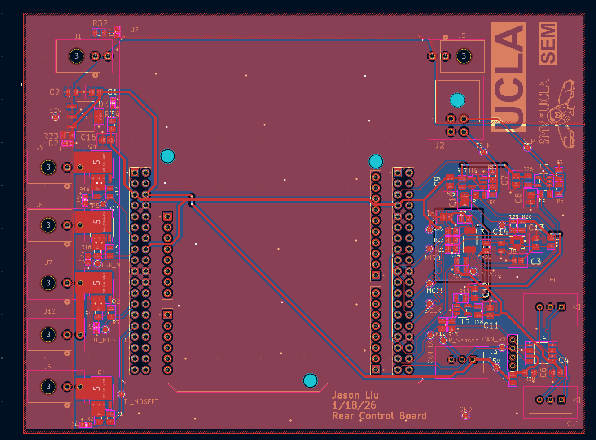
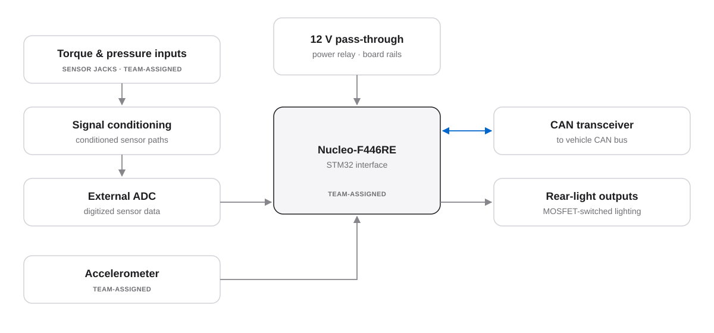
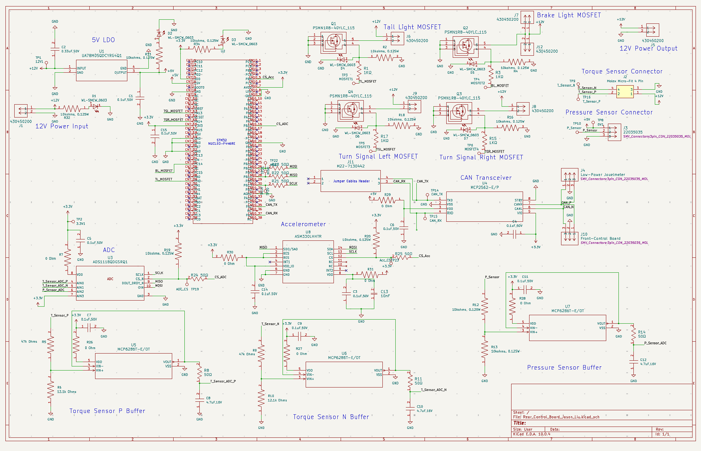
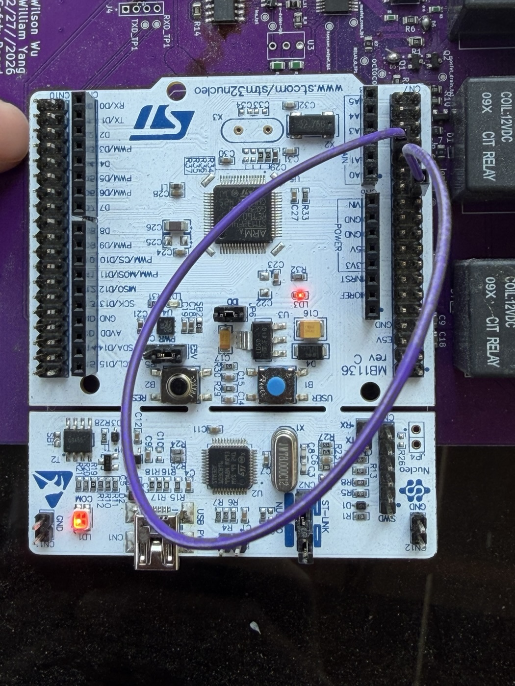
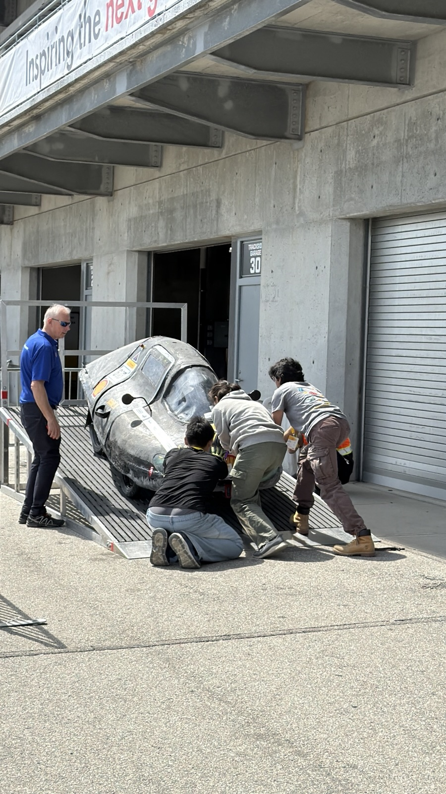

Completed · Sep 2025 – Jun 2026
Supermileage rear-control board
A rear lighting, sensing, and CAN board I designed for the Bruin Racing Supermileage car, plus fixing the car’s CAN wiring at competition.
This page covers two things. The first is the rear-control board, my first full PCB design from block diagram to schematic to two-layer layout. It was never fabricated. The second is hands-on work on the car’s existing low-voltage system, including fixing CAN at the 2026 Shell Eco-marathon.

The board
The team picked the main parts and interfaces, including the Nucleo-F446RE, the accelerometer, and the sensor connectors. I designed the circuits around them and did the schematic and layout. The board has:
- 12 V power pass-through with a power relay
- MOSFET outputs for the rear lights
- A CAN transceiver to talk to the rest of the low-voltage system
- Signal conditioning for the torque and pressure sensors, feeding an external ADC
- The accelerometer and the Nucleo-F446RE connection


Fixing CAN at Indianapolis
I also worked on the car’s existing low-voltage system: soldering, crimping, wiring, bringing up boards, debugging with a multimeter and serial output, and writing RP2040 firmware.
At the 2026 Shell Eco-marathon, CAN messages weren’t getting through between the boards. Here’s how I tracked it down:
- Loaded simple transmit and receive test firmware onto the connected boards to check whether messages arrived.
- Went through the wiring harness one section at a time to find where messages stopped.
- Found reversed pinouts and damaged wiring, and repaired them.
- Confirmed messages were getting through again. That fix let the car pass most of the electrical technical inspection.
Photos from the car


Choosing a brake-light sensor
I compared three ways to tell when the brake is pressed: a Hall-effect sensor, a hydraulic pressure sensor, and a strain gauge.
The first two didn’t fit well with the car’s mechanical setup, so we went with a strain gauge on the brake pedal.
Where it ended
Done on the car
- CAN fixed on the existing system
- Strain-gauge brake sensing installed
Designed only
- The rear-control schematic and layout; the board wasn’t fabricated